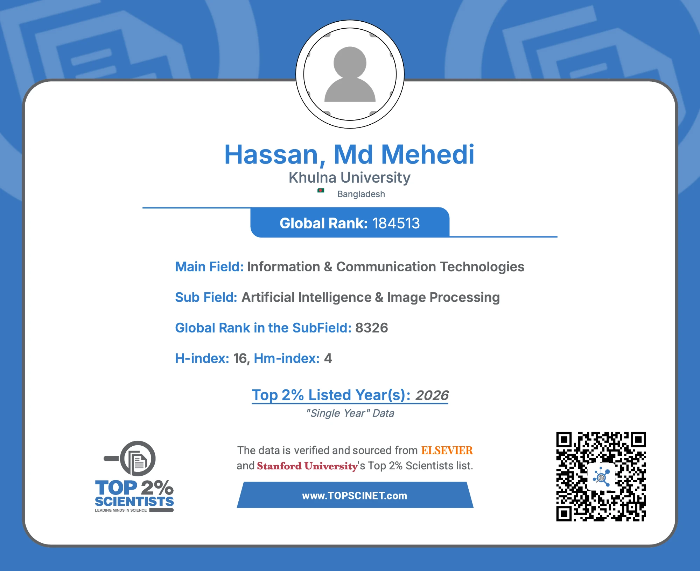
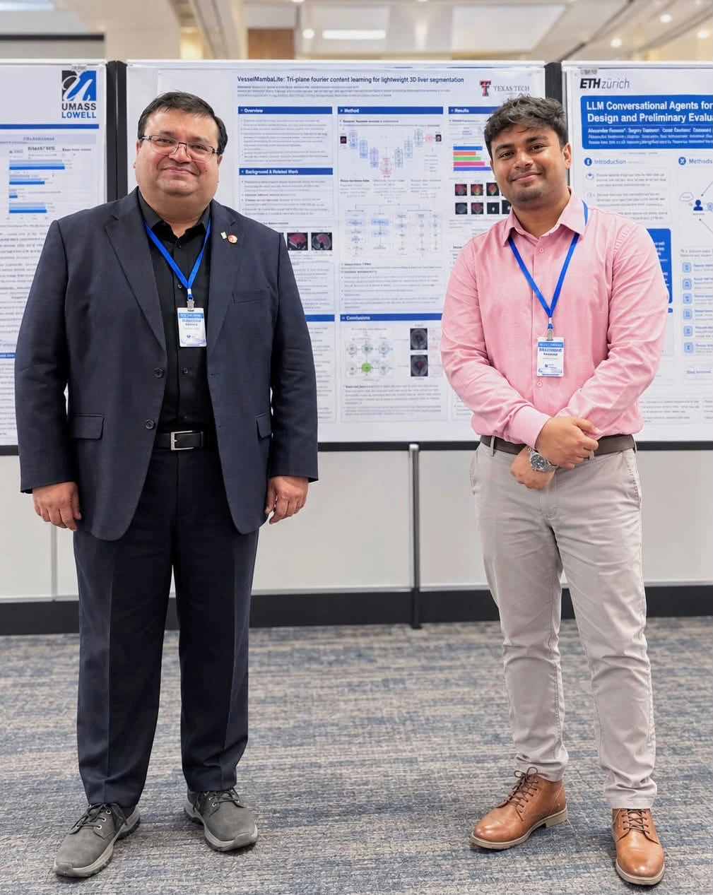

Press & Updates
Named in the world’s top 2% of scientists
Listed in the 2026 Top 2% Scientists ranking compiled by Stanford University and published by Elsevier — the single-year citation-impact list that covers roughly the top two per cent of researchers worldwide across every scientific field.
The listing places the work in Artificial Intelligence & Image Processing, under the broader field of Information & Communication Technologies.
The h-index shown on the certificate is Scopus-based, which is how the Stanford & Elsevier list is computed. The Google Scholar h-index of 27 quoted elsewhere on this site counts a wider set of sources, so the two numbers are measuring different things.

2026
IEEE HealthCom 2026, New York
Presented my first Ph.D. research work — Tri-Planar Fourier Context Learning for Lightweight 3D Liver Segmentation — at the IEEE International Conference on E-health Networking, Application & Services, held 19–21 October 2026 in New York City. The paper is an industry-linked collaboration with Stanford University and Emory University, and the method targets accurate 3D liver segmentation at a fraction of the usual computational cost. With thanks to my supervisor for the guidance and the faith in the work.

Top 2% Scientists 2026 — Stanford University & Elsevier
Included in the single-year citation-impact ranking for Artificial Intelligence & Image Processing. See the announcement above.
About the list →DermaViGNet — explainable AI for skin disease diagnosis
A hybrid Vision Transformer and CNN framework for skin disease classification, built with explainable AI so clinicians can see which regions of an image drove a diagnosis. Trained and validated on nearly 10,000 dermoscopic images spanning common and underrepresented conditions, it reached 98% accuracy across five dermatological conditions — vitiligo, acne, nail psoriasis, hyperpigmentation, and the rare, life-threatening Stevens-Johnson Syndrome–Toxic Epidermal Necrolysis — outperforming eight baseline deep learning models. The work is an Australia–Bangladesh research collaboration.
2025
DICTA 2025, Adelaide
Keynote on evolutionary neural architecture search for brain tumor segmentation networks.
See conference leadership →2024
Springer Nature Editorial Coverage
Official feature announcement recognizing the Best Paper Award for research in AI healthcare analytics.
Read the feature →How Healthcare Informatics Will Shape the Future of Healthcare Delivery
Commentary for Health Data Management on clinical AI workflows and data infrastructure.
Read the article →How Data Interoperability Can Transform Patient Care
Expert commentary for Health Data Management on health data exchange, interoperability standards, and clinical outcomes.
Read the article →National ICT Research Fellowship
Conferred by the ICT Division, Government of Bangladesh, for contributions to biomedical AI and EEG signal processing.
See experience →